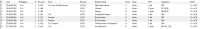

|
This page last changed on Nov 08, 2013 by placemaster.
I already have a quit nice setup. Now I am willing to show the status of the doors and windows in my home. Are they open or closed.
All the door and windows are equiped with a knx-sensor for this purpose.
The door or window uses only 1 adres (1/0/3). There is no readbackvlaue like I have with switches or temperature.
I have no clue what action I have to start with to show if it is open or closed.
The picture show the traffic on the bus $01 wenn I opened the window and $00 when I closed it.

|
Hi,
After checking to your Ets monitoring (thanks for the mix of Dutch and German...- ): ):
Did you try to use this group adress just as another feedback group adress ?
If I good understood, only what you want is to display the status
You can just create a "command" as you do it for feedback, and then a "sensor".
Then you affect the "sensor" to a label on your panel. Should work .

Posted by phil1348 at Nov 08, 2013 16:26
|
|
Yes it should be only used for feedback. I just want to know if it is open or closed (display status).
I have 20 adresses that I want to know the status of.
I have created a command with Groupadress 1/0/3 and KNX command Status.
The sensor that I created I linked with the command and type I choose switch.
It is working. It shows perfectly the status.
It was much easier than I expected.
Thanks for your help.
Posted by placemaster at Nov 08, 2013 17:01
|
|
{kind=link}
{kind=link}